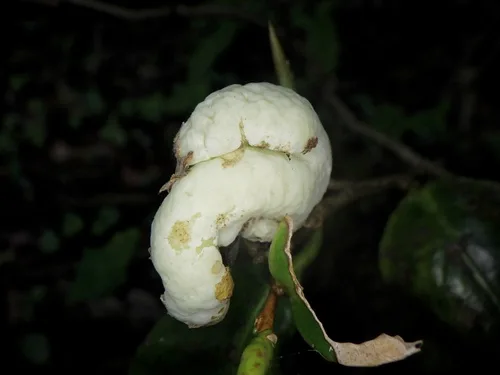

山茶新叶变厚肉质化，表面泛白
山茶枝端的浅色肥厚块可能由一片嫩叶变成。趁组织仍肥厚、尚未粉化，便于逐个清除。

检查植株
检查山茶、尤其茶梅的新梢。幼叶局部或整片会膨大成浅色肥厚块状，失去扁平叶形。沿肥厚块追到叶柄并检查邻芽，可与刚好落在叶片上的受损花朵区分。
区分相似表现
白色覆盖物出现在已经膨大的组织上。与叶厚正常、仅表面有粉状物或介壳虫的情况对照。
现场处理
少量可触及的瘿宜在仍坚实、表面尚未粉化时摘除并带离种植区，避免遗留在株下。
后续复查
连续潮湿天气后随新梢展开复查。老瘿在侵染期结束后仍可能干褐并留在枝上。
值得单独记录的细节
山茶仅少数叶片变厚时，标记旁边一根尚未展叶的新梢。展叶后复查，可区分新长的瘿与原先藏在叶丛中的老瘿。
找出肥厚组织从哪里开始
摘瘿前看同一新梢上的其他叶。如果只有一片变成肥厚浅色块、相邻叶形正常，记下这种分布。若整株成龄山茶的叶片素来均匀厚实，应先核对品种特征。